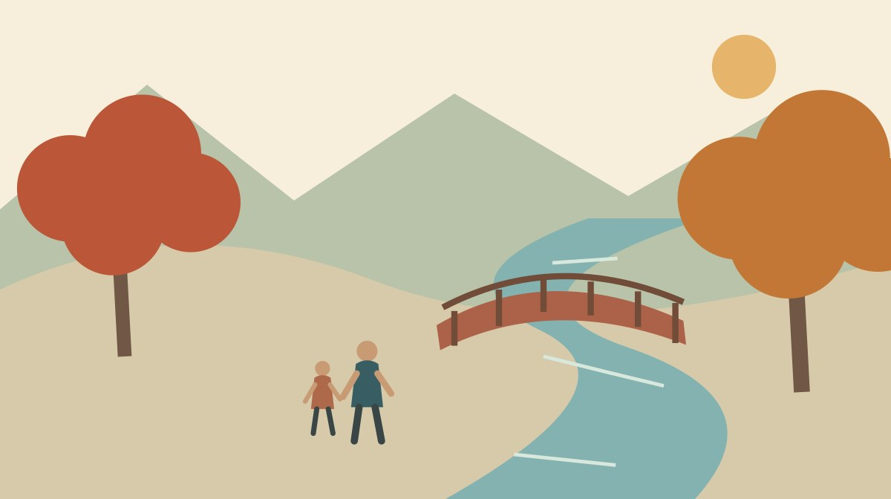
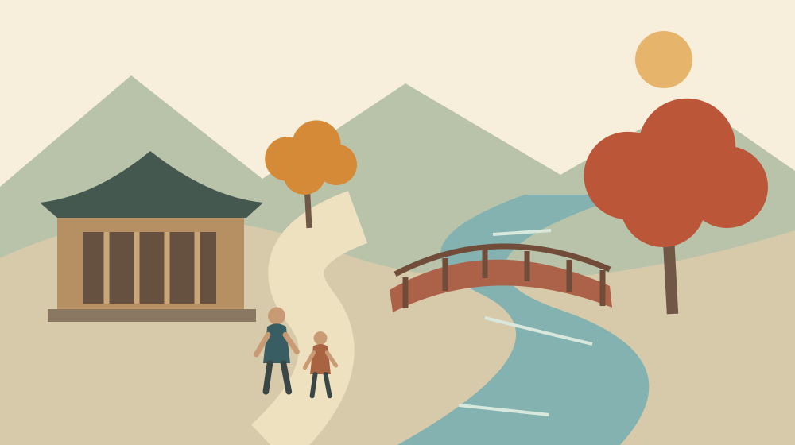
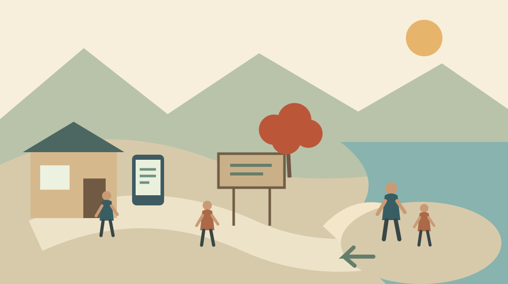

寺社・歴史
小國神社の紅葉｜森町で宮川沿いを歩く準備

Q. 小國神社の紅葉を家族で見に行くなら、何を準備すればよいですか？
A. 小國神社公式は紅葉の季節を11～12月とし、宮川の社殿上流域の遊歩道や太鼓橋付近を紹介しています。ただし当日の色づき、通行状況、歩行時間を保証する案内ではありません。家族で歩く範囲を一つ選び、最新情報と現地表示を確認してから進みます。
小國神社の紅葉は、まず季節と場所を分けて読む
小國神社の紅葉散策は、宮川沿いのどこを歩くかを決めるところから始められます。小國神社公式「杜の四季めぐり」は、秋の紅葉を十一月～十二月と案内しています。この記事は2026年10月28日に公式情報を確認して書いています。当日の紅葉の進み具合を報告する現地取材ではありません。
森町で境内や地域の環境を守ってきた方々がいて、参拝や散策の機会があります。訪ねる家族にとっては一日の外出でも、迎える側には日々の管理があります。大石浩之（磐田市／不動産業）として、私は景色の紹介と同じくらい、無理なく訪ねて帰る段取りを考えたいと思います。
公式の季節案内には、宮川の社殿上流域へ続く遊歩道が紹介されています。小橋からの景色や、社殿脇の太鼓橋付近にも触れています。紅葉という大きな言葉だけで探すより、宮川、社殿上流域、太鼓橋という具体的な場所を手がかりにすると、確認したい範囲を絞れます。
ただし、公式ページの十一月～十二月という表記は、毎日の色づきを示す観測表ではありません。2026年の特定日に必ず赤くなる、全区間が同時に見頃になる、という意味には読み替えません。出発日が決まったら、神社の「季節の便り」と「お知らせ」をもう一度開く準備をしておきます。
町公式「小國神社・大洞院の青もみじ」は、2022年5月16日更新の初夏の案内です。宮川の青もみじの写真と所在地が掲載されています。同じ宮川でも季節が違えば、紹介の目的も変わります。このページの「見頃」を、2026年10月の紅葉情報として使うことはできません。
私は、出かける前の調べものでは「場所の確認」と「今日の状態の確認」を別々にするのがよいと考えます。所在地のページを見つけたら準備完了、とはしません。季節の説明、更新日、当日の案内を分けて見るだけで、古い告知を頼りに遠回りする失敗を減らせます。
宮川沿いの散策を、参拝の時間と一緒に考える
小國神社の宮川沿いは、社殿のある境内に接する散策の場所です。公式が紹介する景色を楽しむときも、神社を訪ねる時間の一部として予定を組みます。撮影したい場所を次々に増やす前に、参拝する時間と帰る時間を先に家族で共有する、という順序を私は勧めます。
出発前には、太鼓橋付近を確認したいのか、社殿上流域の遊歩道を歩きたいのか、目的を一つ言葉にしておきます。二つとも必ず回る約束にする必要はありません。現地で疲れや混雑を感じたとき、一か所だけで帰る選択が残っている方が、家族の足並みをそろえやすくなります。
公式案内に場所の名前があることと、その日に自由に立ち入れることは別です。現地の案内板や規制、管理する方からの指示を確かめて歩きます。掲載写真に写る場所へ行くために、柵を越える、通路を外れる、作業中の場所へ入る、といった行動は予定に含めません。
森町の「45 森町の神社建築」は、小國神社本殿を町指定の文化財として紹介しています。紅葉だけでなく建物にも目を向ける入口になります。ただし、文化財の紹介は内部見学の許可ではありません。社殿の歴史を調べることと、見学できる範囲を確認することも分けて考えます。
建物の年代や形から町を知りたい方には、森町の神社を建築から見る記事が入口になります。私は、現地で説明板を一つ読み、帰宅後に町史を開くくらいの余白を残したいと思います。一度の外出で歴史も景色も全部見ようとしなくてよいのです。
写真を撮る際は、自分の画面だけでなく、後ろから来る人の通り道も見ます。家族の集合写真を撮る場所と、他の参拝者が通る場所が重なるなら、撮影を待つ選択ができます。これは現地の禁止事項を代弁する記述ではなく、私が訪問者側に提案したい配慮です。

良い点｜公式案内から家族の目的を小さく決められる
小國神社の公式案内の良い点は、紅葉の季節だけでなく、宮川沿いや太鼓橋付近という場所まで紹介していることです。私には、景色の名前が具体的に分かる点が助かります。行き先を「紅葉の名所」とだけ決めるより、現地で何を確かめたいかを家族に説明しやすくなるからです。
公式の「杜の四季めぐり」には、春、初夏、夏、秋の案内があります。秋の一度だけで神社を知ったつもりにならず、別の季節にも目を向けられます。私は、家族の都合と見頃が合わなかった場合に、次の訪問を考える材料になるところにも価値を感じます。
季節の違う公式写真を見比べると、赤い葉だけを目当てにする以外の楽しみ方を考えられます。川と木々、社殿のある景色を、家族はどのように見たいのか。私は、出発前に写真を一緒に一枚見るだけでも、歩く距離を増やさずに期待を共有できると考えています。
神社公式には交通案内もあり、所在地とアクセス、駐車場に関する注意を一緒に確認できます。地域に不慣れな家族には、同じ運営者の案内を続けて読めることが利点です。地図アプリで目的地だけを指定する前に、神社が示す入口や注意事項を読む手間を組み込めます。
境内で別の関心を持つ家族がいるなら、小國神社の土鈴館と八角形の建築を紹介した記事も参考になります。施設の利用は最新の開館状況を確かめる必要がありますが、紅葉だけで一日の満足を決めない予定を考えるきっかけになります。
注文したい点｜季節案内だけでは歩ける条件は分からない
小國神社の季節案内だけでは、家族ごとの歩きやすさを判断できません。今回確認したページでは、宮川沿いの各区間について、実測の距離、段差、勾配、往復時間を一組にした案内は確認できませんでした。私は、景色の説明と歩行条件の間に残る空白を意識して予定を組みたいと思います。
歩行に不安がある家族がいる場合は、「散策できる」という言葉だけで判断しません。どこまで進みたいかを場所の名前で伝え、通行条件を確認する準備をします。車いすやベビーカーの利用可否も、舗装や段差を確認せずに本記事から一律に案内することはできません。
私は、区間ごとの歩行条件や当日の注意を簡潔に確認できる案内があると助かると考えます。ただ、その更新にも人手が要ります。現地を管理する方に常時細かな回答を求めるだけでは続きません。訪ねる側も、まず公開情報を読み、不明な点を一つに絞って問い合わせる用意ができます。
家族が問い合わせる場合は、代表者を一人決めると情報をまとめやすくなります。別々の人が同じ質問を繰り返す代わりに、訪問予定日、確認したい場所、歩行上の心配を短く整理します。回答を受けたら日付と内容を共有し、変更の可能性があることも併せて伝えます。
担い手への配慮は、遠慮して疑問を抱えたまま出発することではありません。森町の社寺を訪ねる人と担い手の負担を考えた記事でも扱ったように、見る側の楽しみと迎える側の仕事を両方考えたいものです。私は、質問の整理も訪問準備の一部だと考えます。
移動と帰路｜駐車場の案内には情報の時点がある
小國神社公式「交通案内」には、紅葉期などの混雑時にアクセス区間の一部で交通規制が行われる場合があると記載されています。出発前に所要時間を調べても、その時間どおりに着くとは限りません。予定を立てる際は、到着後の散策だけでなく、入場や帰路の余裕も考えます。
同じ交通案内には、駐車場の掲載内容が2024年12月現在であるという注記があります。2026年10月28日に閲覧できたことと、説明の基準日が2026年であることは同じではありません。第5駐車場の工事に関する記載もありますが、現在の工事状況はこの記載だけでは確定できません。
私は、この日付の違いが意外に見落としやすいと感じます。検索で上に出てきた公式ページでも、すべてが今日の運用を示すとは限らないからです。駐車場を一つ決め打ちする前に、最新の告知と現地入口の表示を確かめる段取りを残しておきます。
無料駐車場という案内があっても、好きな場所へ停められる意味ではありません。満車や規制があれば、現地の誘導に従います。一般の住宅や事業所の前を待機場所にする予定は立てません。地域に暮らす人の出入りがある道だという感覚を、訪問する側も持っておきたいと思います。
鉄道を使う家族は、駅から神社までの移動と境内での散策を別々に考えます。私は、境内で歩く余力を残すため、帰りの交通手段も出発前に確かめたいと思います。送迎や臨時便があると推測せず、利用する日の公式案内を確認してから一日の予定へ入れます。
現地で過ごす時間を長く取るほどよい、とは私は考えません。帰宅後の用事や運転する人の疲れも一日の負担です。同行者が「ここまでで満足」と言える区切りを用意し、予定を縮める判断を誰か一人の我慢にしない方が、次の外出にもつながります。

対案・結論｜今日、歩きたい場所を一つ選ぶ
小國神社の紅葉散策に向けて今日できることは、公式の季節案内を開き、歩きたい場所を一つ選ぶことです。「太鼓橋付近を見たい」「社殿上流域の遊歩道を確かめたい」と短く書きます。その一行を、当日の通行条件と家族の体調に照らして判断する材料にします。
次に、同行者の中で歩行に不安がある人、帰宅時間が決まっている人がいないかを聞きます。病名や詳しい事情を全員に知らせる必要はありません。「長く歩かない」「途中で戻る可能性がある」など、予定を組むために必要な条件を共有するだけでも準備になります。
出発前日に公式のお知らせを読み、当日は現地表示を見てから進みます。雨や風、足元の状態に不安があれば、予定した場所まで行かない選択をします。本記事では安全に歩ける天候や水位の数値基準を示していません。現地で危険を感じた場合に、記事の行程を優先する必要はありません。
私は、引き返す場所を地図上で固定するより、「同行者が疲れたら戻る」「規制があれば先へ進まない」と判断の条件を決める方が使いやすいと考えます。写真と同じ景色まで行くことを達成目標にすると、条件が変わっても予定を縮めにくくなるからです。
持ち物は家族の事情に合わせて決めます。私は、歩く予定に合う靴、必要な飲み物、連絡手段を先に考えます。現地で必ず買える、すぐ休めると確認できていないものを前提にしません。忘れ物の確認を一人に集めず、それぞれが自分の必要品を一つ確かめるだけでも役割を分けられます。
帰る前には、家族の人数と帰路をもう一度確認します。写真を見返すのは移動を終えてからでもできます。私は、景色を楽しんだ記憶と、無事に帰れた段取りを一緒に残したいと思います。次回の訪問に使えるのは、きれいだったという感想だけではないからです。
家族に残す記録｜次に訪ねる人へ条件を渡す
小國神社への家族の訪問記録には、訪問日、実際に歩いた範囲、利用した入口、途中で戻った理由を残すと役立ちます。記録は当日の家族の経験であり、ほかの人にも同じ条件が当てはまるとは限りません。公開する観光情報と、家族だけの備忘録は分けておきます。
写真には、撮影場所が確かなものだけ場所の名前を付けます。橋の名前が分からなければ、未確認と残せます。別の社寺の写真や前年の紅葉を混ぜないためにも、撮影日を残します。私が勧めたいのは詳細な旅行記ではなく、次に出発する家族が確認をやり直せる程度の記録です。
町内の実家に寄る予定がある場合も、紅葉散策と家の用事を一度に詰め込みすぎないように考えます。片付けや点検を誰がするか、鍵を誰が持つかは、参拝の予定と別に整理できます。持ち主の同意なく家の住所や鍵の保管場所を外出写真と一緒に公開しない配慮もできます。
実家へ通う家族にとって、森町を訪ねる日は用事だけで終わりがちかもしれません。私は、短い散策を挟める余白には価値があると考えます。ただ、家の仕事と観光を組み合わせるかは各家庭の判断です。両方をこなすことを義務にせず、その日にできる範囲を選べばよいと思います。
大石の視点｜名所の価値を、歩く量で測らない
小國神社の紅葉を楽しむ準備で、私が軸にするのは家族の移動と段取りです。町の外に住む不動産業者として、地域の魅力だけでなく、訪ねる側と支える側が払う時間にも目を向けたいと思います。この記事では、一言メモに代えて、その実利を判断の基準にしました。
私はこう考えます。家族で森町を訪ねる予定を組むなら、最初に「何か所回るか」を決めるのではなく、「誰が帰りまで無理なく動けるか」を考えます。景色のよい場所を足すほど、移動や待ち時間も増えます。これは実際の相談事例の紹介ではなく、私自身の判断です。目的を一つに絞り、途中で戻る余地を残す方が、その家族に合った外出になりやすいと考えています。
名所の価値は、歩いた距離では決まりません。私はそう言い切ります。太鼓橋付近を見て帰る日があっても、紅葉を十分に楽しめなかったとは限りません。逆に、公式写真と同じ景色を撮れても、同行者や地域の人に無理をかけたなら、段取りを見直す余地があります。
私にも迷いはあります。現地を知らない家族に詳しい行程を示した方が親切なのか、それとも当日の判断を残すべきなのか。ただ、今回は区間ごとの歩行条件を裏付けられていません。距離や所要時間を作って安心させることはできないので、確認する場所と順序を示す形にしました。
境内の維持を担う人が、訪問者の都合に無制限に合わせることはできません。訪ねる側が公開情報を読み、現地表示を守り、歩く範囲を小さく選ぶことは、その負担を考える一歩です。今日の準備は、公式案内を家族と一緒に開くところまでで十分です。見頃や当日の条件は、出発前に確かめます。
よくある質問
小國神社の紅葉散策について、季節の案内と当日の確認を分けて回答します。
10月28日は小國神社の紅葉の見頃ですか？
2026年10月28日の色づきは、本記事では確認できていません。小國神社公式「杜の四季めぐり」は紅葉の季節を十一月～十二月と紹介していますが、特定日の見頃を保証する情報ではありません。出発前に神社の最新のお知らせや季節の便りを読み、掲載日も確認してください。過去の写真を当日の様子として判断しないようにします。
宮川沿いは何分で歩けますか？
今回確認した公式案内からは、宮川沿いの区間別の実測距離や往復時間を確認できませんでした。社殿上流域の遊歩道や太鼓橋付近の紹介はありますが、同行者全員が同じ時間で歩けるとは判断できません。歩きたい場所を一つ選び、段差や通行条件に不安があれば事前に確認します。当日は現地表示と家族の体調を優先してください。
駐車場と交通規制はどう確認しますか？
小國神社公式「交通案内」と最新のお知らせを読み、到着後は入口の表示や誘導を確認します。交通案内には紅葉期などに交通規制を行う場合があると記載されています。駐車場の説明には2024年12月現在という注記もあるため、工事や開設の状況を現在のものと決めつけません。利用する駐車場を一つに固定せず、帰路の余裕も残します。
公式情報源
2026年10月確認。本文の確認日は2026年10月28日です。
案内、施設の利用条件、数値は変更される場合があります。訪問日の最新情報と現地表示を確認してください。歩行や健康、個別の不動産判断に不安がある場合は、事情に応じた専門家へ相談してください。